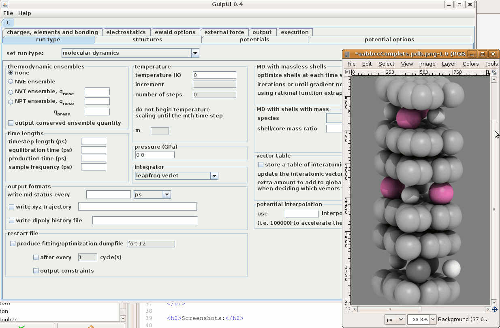

AtomSim
AtomSim is a collection of interfaces to forcefield-based simulators for
calculating a variety of phenomena, from MD to Monte Carlo, for atomistic
systems. At a scripting level, it is a collection of python wrappers to
well-known engines such as General Utility
Lattice Program (GULP) or MMTK. At a GUI level it
is a web-deployable Java interface. It is used extensively in larger web
framworks such as the Virtual Neutron
Facility (VNF), but it can also be accessed as a stand-alone
application.
GUI Interface
There are two ways to interact with the GUI to AtomSim. By logging on to VNF one can take advantage of database
support for jobs and atomic structures:
- Obtain a regular user account or login with username demo and
password demo.
- Follow the MD workflow
tutorial.
while the Google App version (this version) can be launched directly from
this page:

Note Java 1.5 or higher must be installed on your machine.
Features:
- Atomic structure / symmetry editor
- Bundled library of forcefields including the Universal ForcefField
(UFF)
- Forcefield creator with over 50 types of potentials (experimental)
- Shell model and QM/MM integration capable
- Electrostatics / ewald summation options panels
- Many runtypes panels available: Energy, Optimization, Fitting, Phonons,
MD, Monte Carlo, Structure Prediction, Reaction Transition Point
Identification
- Job queue and settings serializer
Additional Features in VNF:
- Database of uploadable materials
- Viewer
- Database of jobs
- Database of forcefields
- Two remote clusters on which to run calculations
- Collaboration tools to load and use calculations of others
- Analysis of phonons and md trajectories
- Density Of States (DOS)
- Velocity autocorrelation function
- S(Q,E)
- S(Q)
- Elastic Incoherent Structure Factor (EISF), and more
- Simulation of neutron scattering spectrum from S(Q,E) scattering
kernel
Screenshots:

Md simulation of potassium intercalated graphite
Scripting Interface
The scripting interface in the memd package can be checked out
using:
svn co svn://danse.us/MolDyn/molDynamics/src
Tutorials and python easy install support should be added eventually.
Questions or Support:
Contact j. keith.